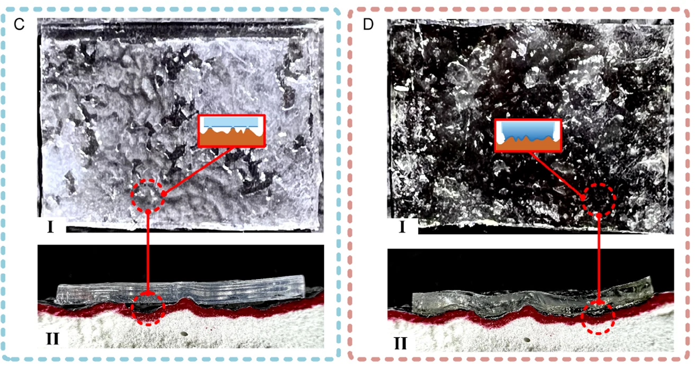

本文目录 · 7 节
一句话精要：PU 黏附层与双稳态预应力壳构成可变刚度脚趾：展开时支持大面积贴附，卷曲时逐步剥离。同一附着材料在两种形态下开关，并不等于在微刺与干黏附之间切换。
{kind=link}

放大查看 ↗· 论文事实、项目启发与待验证事项分开记录。
机制 / 结构如何把动作变成附着
伸缩杆、双稳态壳和黏附材料共同组成脚趾。拉绳/舵机改变壳的形态，进而改变整体刚度与接触面积。高刚度支撑有助于传递承载，卷曲则提供可控剥离路径；二者需要按不同阶段评价。
论文通过热处理改变 PU 的弹性模量，使其更容易贴合起伏。这是材料制备条件，不表示机器人接触墙面时必须把足端加热到 200 °C；也不能把任意商用 PU 视作具有相同性能。
项目启发 / 哪些值得迁移
“双稳态黏附爪适应粗糙/光滑面”已不能单独作为新颖性论点。可研究的问题是：两个稳态能否分别激活两种物理机制，以及受载时能否保持、按需释放。即使概念有区别，仍需用机制干涉、质量和循环实验体现实际收益。
证据 / 参数与测试条件
| 项目 | 原文或精读记录 | 条件与解释 |
|---|---|---|
| PU 模量变化 | 约 0.152 → 0.076 MPa | 对应热处理温度 25 → 210 °C |
| 光滑面最大黏附 | 正文约 175 N；摘要 up to 180 N | 最大力属于论文足爪与测试面积，不是材料通用常数 |
| 其他表面 | 中等粗糙约 125 N，高粗糙约 110 N | 织物约 95 N；需保留各表面和试样条件 |
| 切换含义 | 展开贴附 ↔ 卷曲脱附 | 同一 PU 黏附机制的接触开/关 |
实验 / 转化为可检查的问题
以下为结合阅读提出的实验建议，尚不代表本项目已完成：
- 使用相同黏附材料比较平板基底与曲率基底，测承载力、释放峰值和释放做功。
- 记录加载时壳是否误翻转、卸载后是否可重复恢复；把静态材料测试与微重力运动演示分开。
边界 / 这些结论不能直接外推
法向拉脱峰值不能直接等同于竖直壁面的剪切承载。微重力场景也不能替代正常重力下完整足端的质量预算与抗倾覆验证。
关联阅读 / 沿问题继续读
- Federle2019 — 卷曲释放对应剥离前沿和应变能的调控。
- Hawkes2015 — 可以借 Anp 与 Ap 的测试框架量化“好粘也好放”。
- Fang2026 — 双模式可指两个附着机制，而 Yu 的两个状态主要指附着/脱附。
论文关联地图 · 当前项目记录：光滑面方案仍在筛选，历史干黏附构想不等于已定型方案。
Kim2023 · 跳跃与栖停 — 区分被动收紧、形态保持和释放。
来源 / 阅读记录与原文
整理依据：paperreading：Yu2024_可变刚度黏附爪、双稳态结构、创新性分析；数据对应原精读记录。